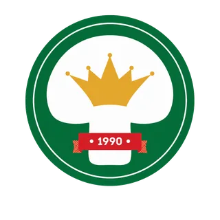
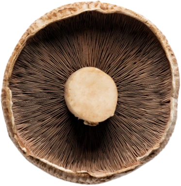
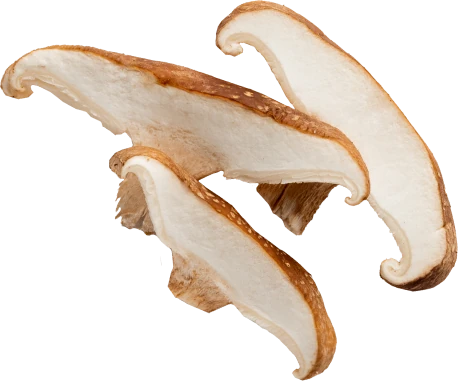
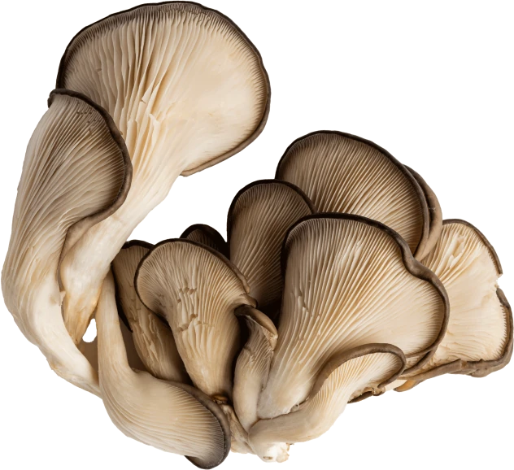
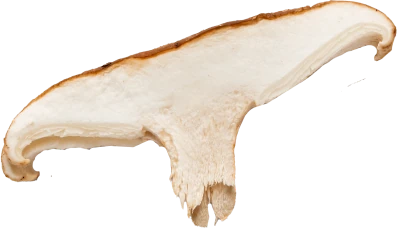
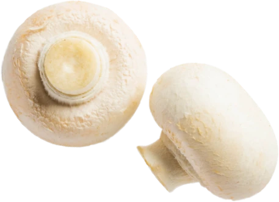
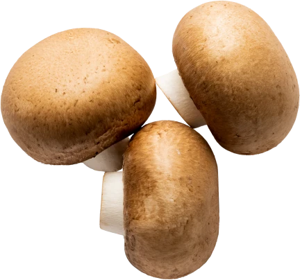
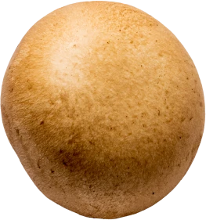
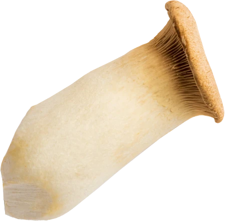
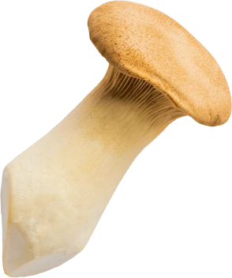
Grillen, nyersen, üvegben — ünnepi asztalon és hétköznap este is.
Független auditok · Évente megújítva
Öt független rendszer ellenőrzi, amit csinálunk, a komposzt alapanyagától a lezárt konzervig. Nem ígéret, hanem auditált, évente felülvizsgált papír.
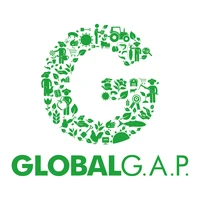
Global G.A.P.
Mezőgazdaság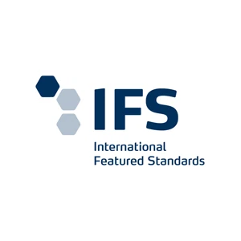
International Featured Standards
Feldolgozás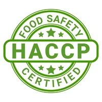
Veszélyelemzés & Kritikus Pontok
Élelmiszer-biztonság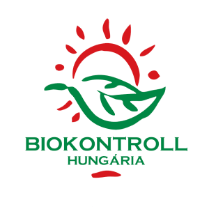
Biokontroll
Bio termesztés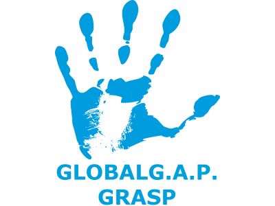
Risk Assessment on Social Practice
Szociális felelősség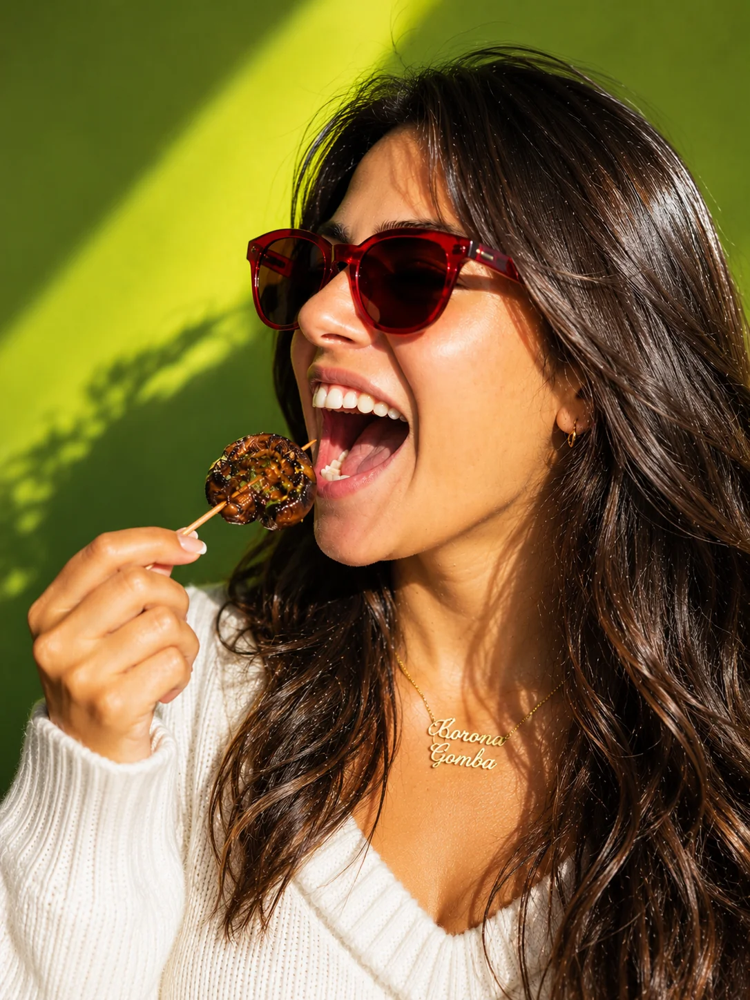
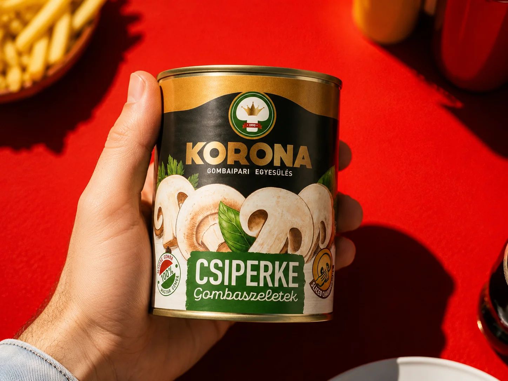
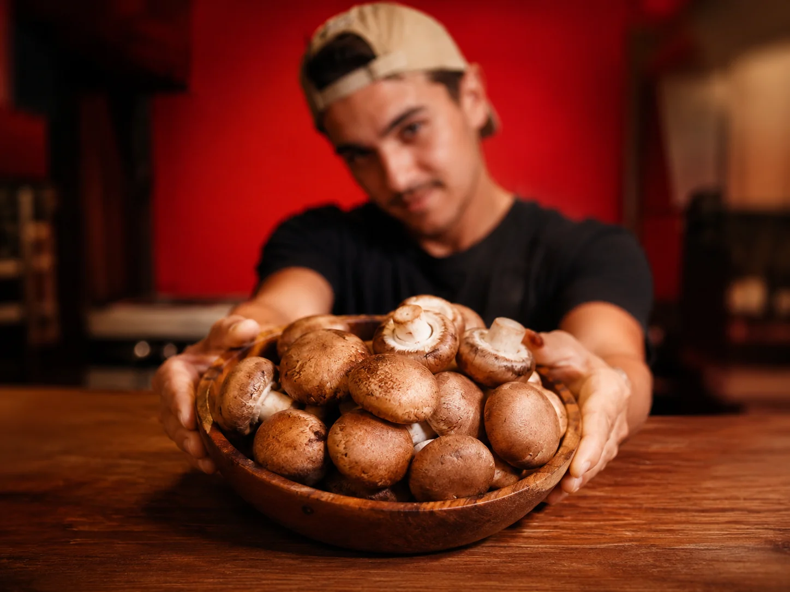
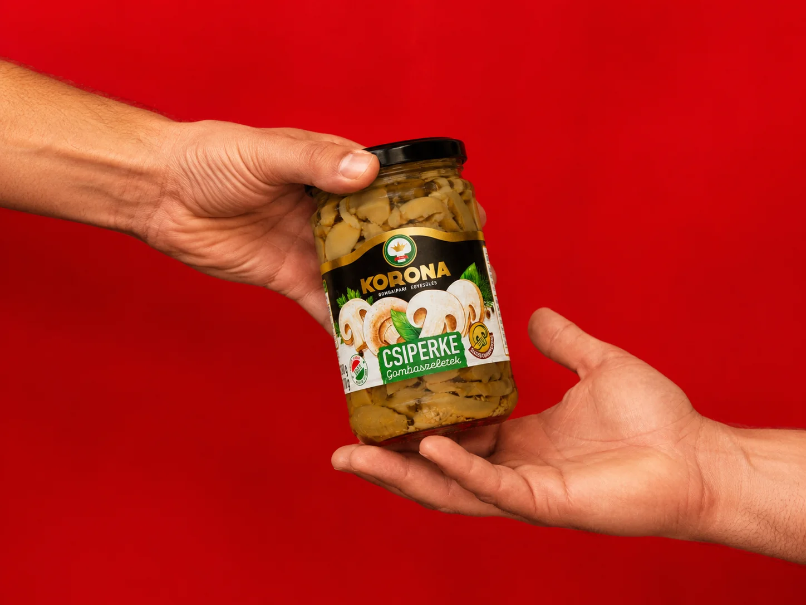
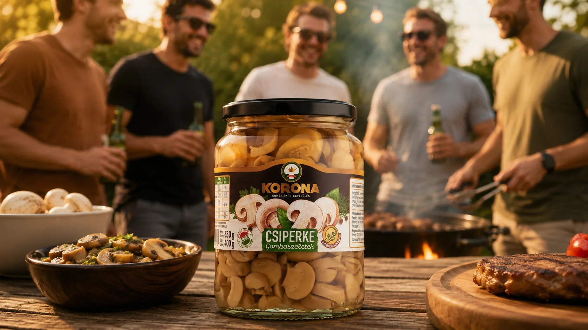
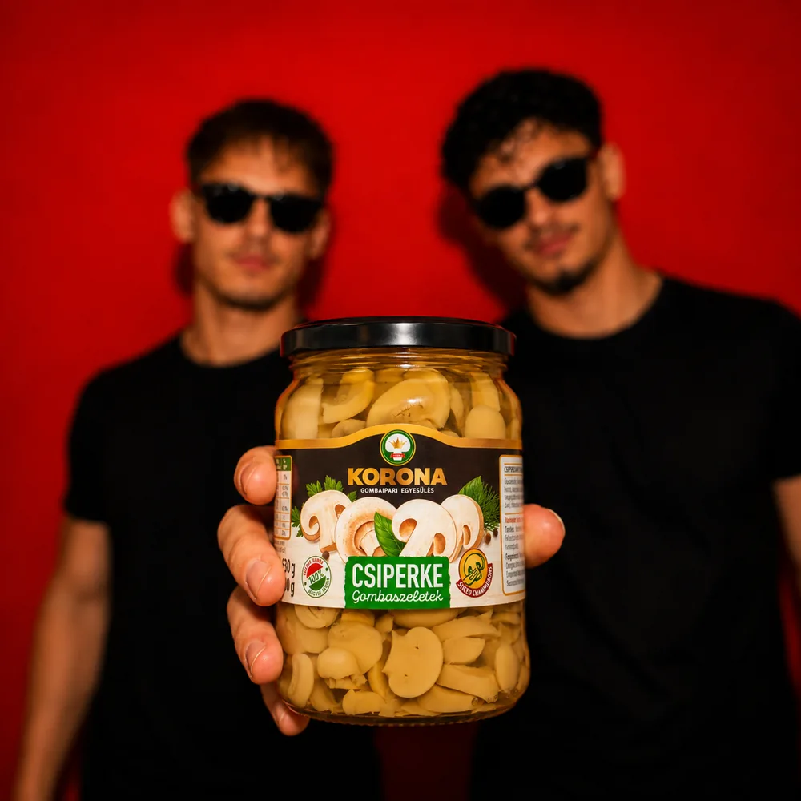
Akikkel együtt dolgozunk
Kereskedelmi láncok, technológiai beszállítók és tanúsító szervezetek — a komposzttól a polcig.
1990 óta
Családi vállalkozások szövetségéből Közép-Európa egyik vezető gombaipari csoportosulása — négy évtized, öt nagy lépés.
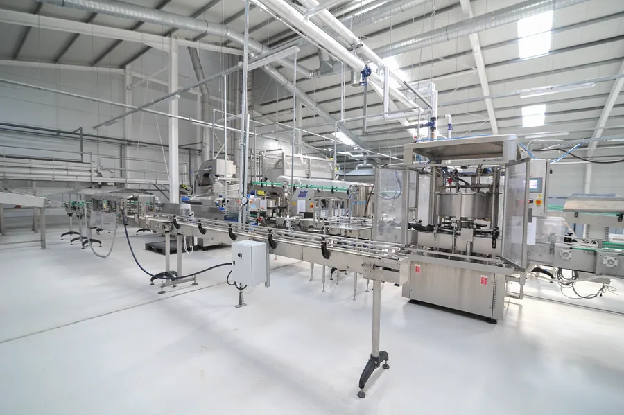
Komposztüzem, az első termesztőházak és a konzervüzem Demjénben.
DemjénSteril csíraüzem és labor — Magyarországon elsőként üzemi méretben.
Le Champion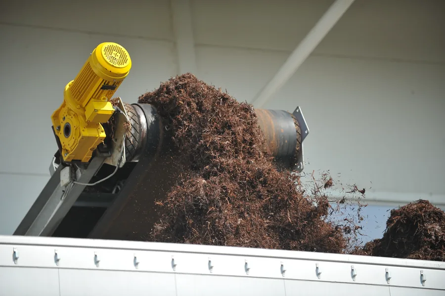
A régió első III. fázisú komposztüzeme — a teljes vertikum a kezünkben.
Komposzt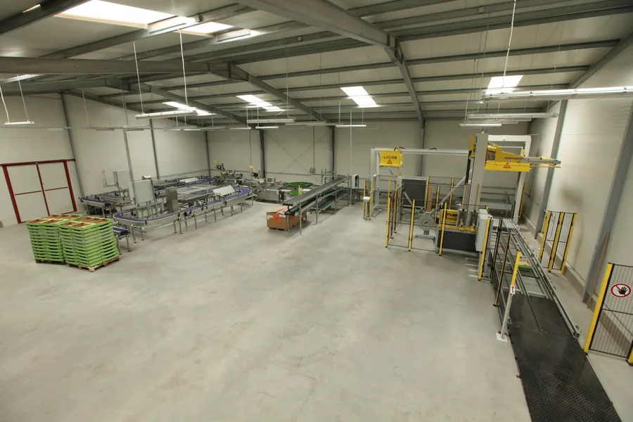
60 holland típusú ház — az ország legnagyobb termesztőfelülete.
45 000 m²Zárt komposztcsarnok és vezérelt biofilter a szagterhelés ellen.
Környezet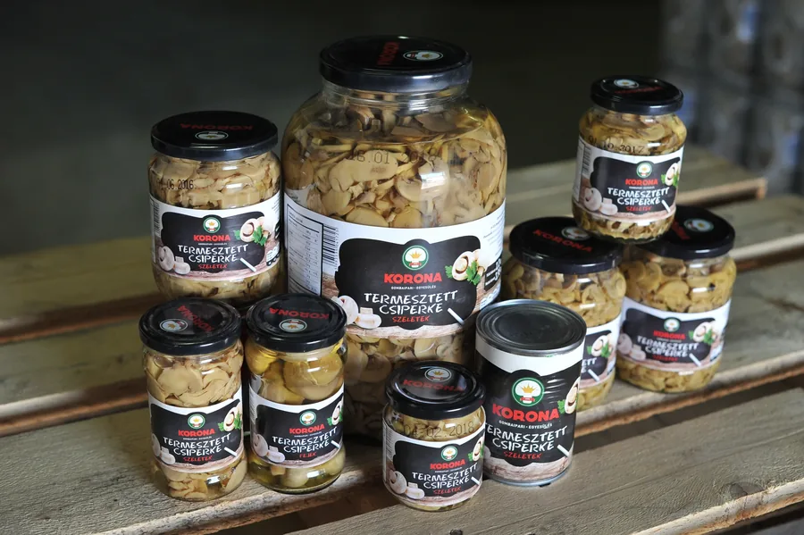
Heti 1 100 tonna komposzt, 45 000 m² felület, 12 exportpiac.
Közép-EurópaDemjén, Magyarország — saját komposztból, 1990 óta.
Kattints egy zászlós országra